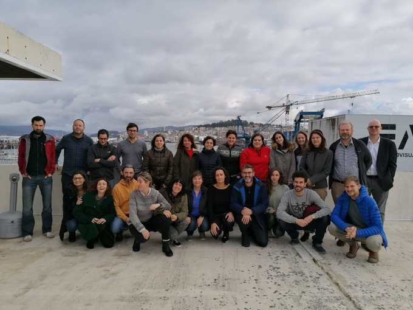

News
-
Annual meeting GRC-MERVEX (10/11/2020)
Productive meeting of GRC-MERVEX planning exciting activities for 2021.
-
Mixed Fisheries advice in the Iberian waters (30/10/2020)
This has been an intense week for some members working on the Mixed Fisheries advice in the Iberian waters and attending several ICES WGs (WGMIXFISH and WKSPICT) trying to improve the scientific advice of the Iberian Atlantic resources.

-
Essential parameters for the Stocks Assessment: the length and the weight (15/10/2020)
This week we talk about two other essential parameters for the Stocks Assessment: the length and the weight. The L-W relationship has 2 fundamental objectives:
- 1. To predict the weight (unknown) from the length (known) of a fish. Very useful for calculating the biomass of a sample from the length frequency of that sample.
- 2. To identify the relative condition of the population by comparing the L-W parameters estimated for a population “x” with:
- (a) average parameters of the region
- (b) estimated parameters from previous years
- (c) other groups of fish.
- b = 3 isometric (W and L increase proportionally)
- b < 3 allometric negative (larger fish are larger than small ones)
- b > 3 positive allometric (greater proportional gain in W than in L)
- VII Conference of Users of R in Galicia (15/10/2020)
Marta Cousido-Rocha presents the conference "A new R-package for the analysis of the fisheries population under uncertainty" in the VII Conference of Users of R in Galicia. Watch the conference in her youtube channel. Go to the video.
- ICES WKLIFE (09/10/2020)
Until recently, fisheries science was unable to inform decision-makers on the status and potential of data-limited fish stocks because we lacked suitable assessment methods. Since 2010, ICES WKLIFE has turned this picture around. Website.
Santiago Cerviño and M. Grazia Pennino have been participated in ICES WKLIFE.
- Scientific advices of the Iberian Atlantic resources (09/10/2020)
Some of our members presented the scientific advices of the Iberian Atlantic resources to the Spanish General Secretariat for Fisheries!Keep working to improving Stocks Assessment and Communication between managers and stakeholders.
- ICES WKLIFE X (07/10/2020)
Our colleague Maria Soto is presenting during the ICES WKLIFE X the preliminary results of a work that assess the effects of under-estimating discards in Production Models using as case study the assessment of the hake in NW Africa.

- Welcome to Francisco Izquierdo and Amina Tifoura (06/10/2020)
We are very glad to announce that 2 PhD students join us! Amina Tifoura and Fran Izquierdo are going to develop their PhD exploring difference aspects of the Stock Assessment process.

- SPiCT model applications meeting with Tobias Mildenberger and Alexandros Kokkalis (30/09/2020)
Great meeting showing advances in SPiCT model applications for Iberian resources in Atlantic waters. Many thanks to advisors Tobias Mildenberger and Alexandros Kokkalis to join us and for all comments and suggestions.

- SPICT applications (22/09/2020)
Some of our members are reviewing advances on SPICT applications on different stocks in the Atlantic waters.

- Workshop on Data-limited Stocks of Short Lived Species (18/09/2020)
Some of our members are participating in the Workshop on Data-limited Stocks of Short Lived Species to further develop methods for Stock Assessment and catch advice for short-lived stocks, focusing on the provision of advice rules.

- New study to help Fisheries Assessment and Management (18/09/2020)
A fundamental concept for Fisheries Assessment and Management is the existence of Stock Units. We are working in a new study ....stay tuned!

- WKTADSA (17/09/2020)
Some members of the group are preparing during these days the Workshop on Tools and Development of Stock Assessment Models. Using a4a and stock synthesis (WKTADSA)! Always trying to improving stock Assessment Models.

- Welcome to Davinia Loja Amoedo and Anxo Paz (16/09/2020)
A big welcome to Davinia Loja Amoedo and Anxo Paz who will start their Master's thesis with us. Anxo will work with different Production Models while Davinia will study the relationship of some life-traits with the environment.

- DESCARSEL survey (28/08/2020)
One of the main source of data used in stock Assessment Models is derived from oceanographic surveys! Members of our group are participating in DESCARSEL survey which studies selectivity in the Northwest Cantabrian fresh fishery.

- IMBeR Interdisciplinary Marine Early Career Network (17/08/2020)
Some members of our group are attending to the the IMBeR Interdisciplinary Marine Early Career Network that aim on balancing the social, cultural, economic and ecological objectives!Learning on spatial measures to improve the assessment of marine resources.

- Conference about collaboration between fishermen and researchers (24/07/2020)
Julio Valeiras and Eva Velasco present the importance of collaboration between fishermen and researchers.

- Virtual International Statistical Ecology Conference (25/06/2020)
Maria Grazia Pennino and Marta Cousido Rocha have contributed to ISEC 2020. Please check the details of the contributions in this link.

- (Virtual) Second Project Meeting Impress (18/06/2020)
Explaining advances of the aims proposed in the first meeting and establishing future studies/activities.

- The Second Workshop on Populating the RDBES data model (WKRDB-POP2) (03/06/2020)
The RDBES will be extensively used by ICES member states, the EU Regional Coordination Groups, and ICES expert groups to store detailed commercial fisheries sample data and use it for estimation - therefore it is essential that national data submitters are familiar with the RDBES format and confident in correctly converting their national data to this format.The activities of this workshop will promote the development of a Regional Database and Estimation System, RDBES at ICES. This workshop will help countries to correctly convert their national data formats to the RDBES format. The RDBES when it is implemented works as a commercial fisheries database for the Baltic Sea, North Sea & Eastern Arctic, North Atlantic and Long Distance Fisheries Regional Coordination Groups (RCGs). The RDBES will also function as a database and estimation system for ICES Fisheries Advice. The development will concentrate on harmonisation, quality assuring, documentation, approved estimation methods and transparency. Consequently, these activities are considered to have a high priority. ICES will issue a data call in 2020 for 2019 samples, landings and effort data in the new RDBES format from selected stocks. The ideal conclusion is that at the end of this workshop each person attending has developed working scripts to extract the data that will be requested by the RDBES data call.

- IEO starts a new project "DIVERSIMAR", an initiative of citizen science to study marine biodiversity (01/06/2020)
- Working Group for the Bay of Biscay and the Iberian Waters Ecoregion (WGBIE) (13/05/2020)
We finished the WGBIE . Challenge and intense days with online meetings!
- Working Group on the Biology and Assessment of Deep Sea Fisheries Resources (WGDEEP) (06/05/2020)
Closing WGDEEP after productive days working on Stock Assessment Models.- Working Group for the Bay of Biscay and the Iberian Waters Ecoregion (WGBIE) (05/05/2020)
Many of the members of our group will attend the ICES WGBIE evaluating megrim, anglerfish, sole, nephrops and pollack stocks in the Atlantic waters.- Working Group on the Biology and Assessment of Deep Sea Fisheries Resources (WGDEEP) (28/04/2020)
Lockdown but still working on Stock Assessment Models as usual!Our team member Juan Gil Herrera is attending the WGDEEP presenting the evaluation of the Spanish Blackspot seabream in the ICES area 27.9
- Course of Galicia Supercomputing Center (CESGA) (17/03/2020)
We are learning how to use Galicia Supercomputing Center (CESGA) in order to explore some options of our R package Rfishpop. Rfishpop is a interest project whose details can be found in the Github repository of IMPRESS project.
- Useful tutorials availables in Impress Github account (26/03/2020)
The tutorials deal of basic aspect of developing R packages in R studio and basic ideas of using Github.- Eva Velasco explained selectivity and discards to the fishery sector (06/03/2020)
Eva Velasco explained selectivity and discards to the fishery sector. Stakeholder engagement is essential for sustainable fisheries.

- International Day of Women and Girls in Science (11/02/2020)
The United Nations General Assembly declared 11 February as the International Day of Women and Girls in Science in order to achieve full and equal access to and participation in science for women and girls, and further achieve gender equality and the empowerment of women and girls. To celebrate this day, Eva Velasco gave talks to secondary school students, about marine resources and innovative tools for sustainable fisheries, explaining Descarsel and Sicaptor projects.
- Introduction to regression models with spatial correlation using R-INLA (10/02/2020)
We are attending to the course "Introduction to regression models with spatial correlation using R-INLA" given by Alain Zuur and Elena Ieno.
- Second day of dissemination of Fisheries Research in ArviInnovapesca (12/12/2019)
We are participating to the second day of dissemination of Fisheries Research in Arvi Innovapesca. The dialogue between stakeholders and researchers as a model of Sustainable Fisheries Management.
- Fisheries and Aquaculture Meeting (10/12/2019)
This week we are in Rome at Fisheries and Aquaculture participating to the benchmark session on the assessment of blackspot seabream in the Strait of Gilbratar!

- WGHANSA meeting (28/11/2019)
Very hard work of Impress Project Members at the WGHANSA meeting.
- Seminar "The recent hake fishery in Mexico. Management Bases" (12/11/2019)
We want to say goodbye to Oscar Zamora García that has been collaborating with us for the last two months and learning techniques of data-limited stock assessment and spatial models!It was a pleasure have you in the IEO Vigo!Have a save flight back to home.
- Landing Obligation Meeting (18/11/2019)
We are involved in different aspects to improve species stock assessment. Our colleague Julio Valeiras participated in a meeting to explain the Landing Obligation and the importance to reduce discards.

- Sustainable Fisheries Symposium Fisheries Aquaculture (19/11/2019)
Our member Carmen Fernandez at the Sustainable Fisheries Symposium Fisheries Aquaculture.

- CPUE standardisation workshop (21/10/2019)
We are attending a CPUE standardisation in the IEO Málaga. Different methods to improve abundance indexes for Stock Assessment models.
- Offer of Scholarship for Training of Doctors of Impress Project (18/10/2019)
Offer of Scholarship for Training of Doctors of Impress Project. "Application of spatial and ecological knowledge in the evaluation of fishing stocks" Link.
- Data limited methods workshop (17/10/2019)
The aim of this workshop is to identify possible stock-assessment models for data-limited stocks. More precisily, we focus on length-based spawning potential ratio method, length based indicators and surplus production in continuous time model "SPiCt".

- PhD contract offer (17/10/2019)
Come and join to Dra Grazia Pennino and Dr Santiago Cerviño ( IEO Vigo ) on this exciting PhD project ( Impress Project ) where you will examine new spatial stock Assessment models to improve scientific advice. For more information please contact me and see: Link.
- Kick-off meeting of the IMPRESS project!(15/10/2019)
Very productive meeting, reviewing Working Packages and tasks of the project!A lot of work to be done.
- Gonzalo González-Nuevo presents research on sardines and regime changes (14/12/2018)

- Meeting of EVALICES Project (27/12/2018)
- Xulio Valeiras talks about how to incorporate discards into stock assessments (13/12/2018)